目录
有监督学习任务的性能会随着更多高质量标签的加入而提升。然而，获取大量带标签样本的成本很高。主动学习是一种在标签数据不足时的处理范式——我们有资源可以为更多样本标注，但预算有限。
这是“面对有监督学习任务时标签数据不足该怎么办”系列的第二部分。这次我们会引入一定量的人工标注工作，但必须控制在预算范围内，因此需要聪明地选择哪些样本进行标注。
符号说明#
| Symbol | Meaning |
|---|---|
| K | Number of unique class labels. |
| (\mathbf{x}^l, y) \sim \mathcal{X}, y \in \{0, 1\}^K | Labeled dataset. y is a one-hot representation of the true label. |
| \mathbf{u} \sim \mathcal{U} | Unlabeled dataset. |
| \mathcal{D} = \mathcal{X} \cup \mathcal{U} | The entire dataset, including both labeled and unlabeled examples. |
| \mathbf{x} | Any sample which can be either labeled or unlabeled. |
| \mathbf{x}_i | The i-th sample. |
| U(\mathbf{x}) | Scoring function for active learning selection. |
| P_\theta(y \vert \mathbf{x}) | A softmax classifier parameterized by \theta. |
| \hat{y} = \arg\max_{y \in \mathcal{Y}} P_\theta(y \vert \mathbf{x}) | The most confident prediction by the classifier. |
| B | Labeling budget (the maximum number of samples to label). |
| b | Batch size. |
什么是主动学习?#
给定一个无标签数据集 \mathcal{U} 和固定的标注成本 B，主动学习的目标是从 \mathcal{U} 中选择一个包含 B 个样本的子集进行标注，使模型性能获得最大幅度的提升。当数据标注困难且成本高昂时（例如医学影像），这是一种特别有效的学习方式。这篇 2010 年的经典综述论文总结了许多核心概念。虽然一些传统方法不适用于深度学习，但本文的讨论主要聚焦于深度神经网络模型以及批量（batch）模式的训练。
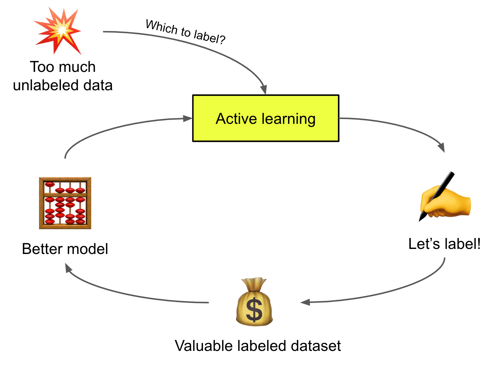
为简化讨论，我们假设后续所有章节中的任务都是 K 类分类问题。参数为 \theta 的模型会输出标签候选上的概率分布（可能经过校准，也可能没有），P_\theta(y \vert \mathbf{x}) 其中最可能的预测记为 \hat{y} = \arg\max_{y \in \mathcal{Y}} P_\theta(y \vert \mathbf{x})。
采集函数#
识别下一步最有价值的待标注样本的过程被称为“采样策略”或“查询策略”。采样过程中的打分函数称为“采集函数”，记作 U(\mathbf{x})。得分越高的数据点，如果被标注，预期能为模型训练带来更高的价值。
下面列出了一些基本的采样策略。
不确定性采样#
不确定性采样会挑选模型预测最不确定的样本。对于单个模型，不确定性可以通过预测概率来估计，尽管一个常见的批评是深度学习模型的预测往往没有经过良好校准，与真实不确定性的相关性不高。事实上，深度学习模型通常过于自信。
另一种量化不确定性的方式是依赖多个专家模型组成的委员会，即 Query-By-Committee（QBC）。QBC 根据一组意见来衡量不确定性，因此保持委员会成员之间一定程度的分歧至关重要。假设委员会池中有 C 个模型，各自的参数为 \theta_1, \dots, \theta_C。
多样性采样#
多样性采样旨在找到能够很好代表整个数据分布的样本集合。多样性很重要，因为我们期望模型在任何野外数据上都能表现良好，而不仅仅是狭窄的子集。被选中的样本应能代表底层分布。常见方法通常依赖于量化样本之间的相似性。
期望模型变化#
期望模型变化指的是单个样本对模型训练带来的影响。这种影响可以是对模型权重的改变，也可以是对训练损失的改善。后文会回顾几项关于如何衡量被选中样本引发的模型影响的工作。
混合策略#
上面提到的许多方法并不互斥。混合采样策略会同时考虑数据点的多种属性，将不同的采样偏好融合到一个函数中。通常我们希望选择既不确定又具有高度代表性的样本。
深度采集函数#
衡量不确定性#
模型不确定性通常被分为两类（Der Kiureghian & Ditlevsen 2009，Kendall & Gal 2017）：
集成方法与近似集成#
在机器学习中，使用集成方法提升模型性能有着悠久的历史。当模型之间存在显著多样性时，集成通常能产生更好的结果。这一集成理论已被许多机器学习算法验证；例如 AdaBoost 将多个弱学习器聚合起来，达到与单个强学习器相当甚至更好的性能。Bootstrapping 通过多次重采样来获得更准确的度量估计。随机森林或 GBM 也是集成有效性的很好例证。
为了获得更好的不确定性估计，一个直观的方法是聚合多个独立训练的模型。然而，训练单个深度神经网络模型已经代价高昂，更不用说训练多个了。在强化学习中，Bootstrapped DQN（Osband 等, 2016）配备了多个价值头，并利用集成 Q 值近似之间的不确定性来引导 深度强化学习中的探索策略。
在主动学习中，一个更常用的方法是使用 dropout 来“模拟”概率高斯过程（Gal & Ghahramani 2016）。我们通过对同一模型施加不同 dropout mask 进行多次前向传播来获取多个样本，并以此估计模型的不确定性（认知不确定性）。这个过程被称为 MC dropout（Monte Carlo dropout），在每个权重层之前应用 dropout，在数学上被证明等价于对概率深度高斯过程的近似（Gal & Ghahramani 2016）。这个简单想法已被证明在小数据集分类任务上非常有效，并在需要高效模型不确定性估计的场景中被广泛采用。
DBAL（Deep Bayesian active learning；Gal 等, 2017）使用 MC dropout 来近似贝叶斯神经网络，从而学习模型权重上的分布。在他们的实验中，MC dropout 优于随机基准和平均标准差（Mean STD），效果与变差比和熵度量相当。
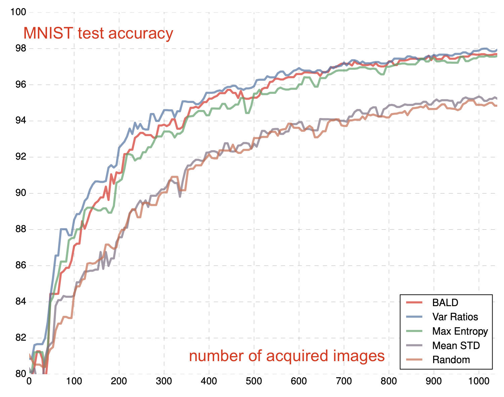
Beluch 等 (2018) 将基于集成的模型与 MC dropout 进行了比较，发现朴素集成（即独立训练多个模型）结合变差比的方法能比其他方法产生更好校准的预测。然而朴素集成计算代价极高，因此他们探索了几种更廉价的替代方案：
不幸的是，上述所有廉价的隐式集成方案性能都逊于朴素集成。考虑到计算资源限制，MC dropout 仍然是一个相当不错且经济的选择。自然地，人们也尝试将集成与 MC dropout 结合（Pop & Fulop 2018），通过随机集成获得少量额外的性能提升。
参数空间中的不确定性#
Bayes-by-backprop（Blundell 等, 2015）直接衡量神经网络中权重的 uncertainty。该方法维护一个权重上的概率分布 \mathbf{w}，由于真实后验 p(\mathbf{w} \vert \mathcal{D}) 难以直接计算，因此将其建模为一个变分分布 q(\mathbf{w} \vert \theta)。优化的损失是使 q(\mathbf{w} \vert \theta) 和 p(\mathbf{w} \vert \mathcal{D}) 之间的 KL 散度最小化，
变分分布 q 通常是一个具有对角协方差的高斯分布，每个权重从 \mathcal{N}(\mu_i, \sigma_i^2) 中采样。为了保证 \sigma_i 的非负性，进一步通过 softplus 参数化：\sigma_i = \log(1 + \exp(\rho_i))，其中变分参数为 \theta = \{\mu_i , \rho_i\}^d_{i=1}。
Bayes-by-backprop 的过程可以概括为：
损失预测#
损失目标指引模型训练。较低的损失值表明模型能够做出良好且准确的预测。Yoo & Kweon (2019) 设计了一个损失预测模块，用于预测无标签输入的损失值，以此估计模型在给定数据上的预测质量。如果损失预测模块对某个样本的预测不确定（损失值高），则选择该样本。损失预测模块是一个带 dropout 的简单多层感知机，它以几个中间层特征为输入，经过全局平均池化后拼接在一起。
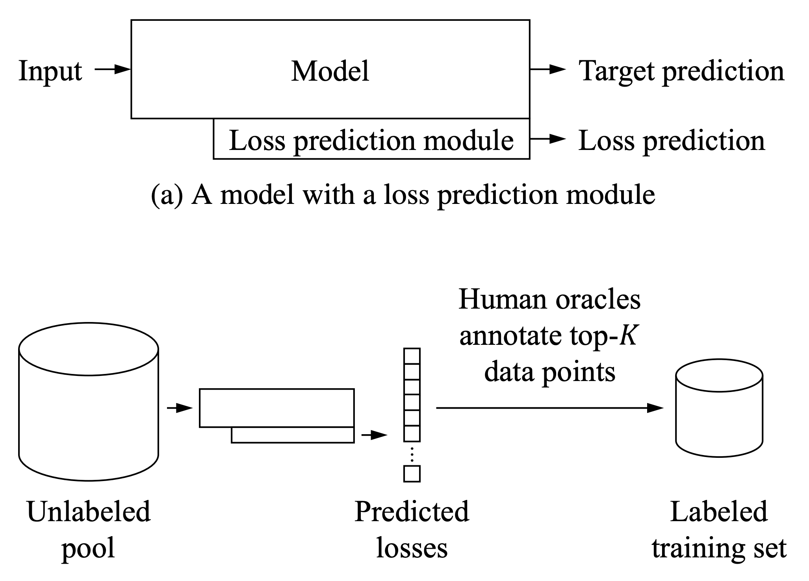
令 \hat{l} 为损失预测模块的输出，l 为真实损失。在训练损失预测模块时，直接使用 MSE 损失 =(l - \hat{l})^2 并不是好选择，因为随着模型学习变好，损失会随时间下降。一个好的学习目标应该与目标损失的尺度变化无关。他们转而依赖样本对的比较。在每个大小为 b 的 batch 中，存在 b/2 对样本 (\mathbf{x}_i, \mathbf{x}_j)，损失预测模型需要正确预测哪一个样本的损失更大。
其中 \epsilon 是一个预先定义的正边际常数。
在三个视觉任务上的实验表明，基于损失预测的主动学习选择优于随机基准、基于熵的采集函数以及核集方法。
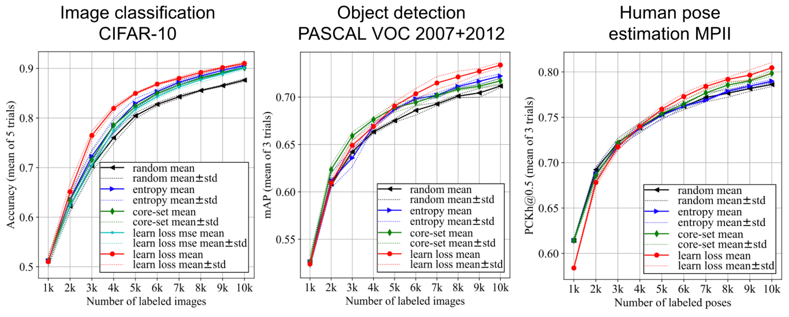
对抗设置#
Sinha 等 (2019) 提出了一种类似 GAN 的框架，称为 VAAL（Variational Adversarial Active Learning），其中训练一个判别器来区分有标签数据和无标签数据。有趣的是，VAAL 中的主动学习采集标准并不依赖于任务性能。
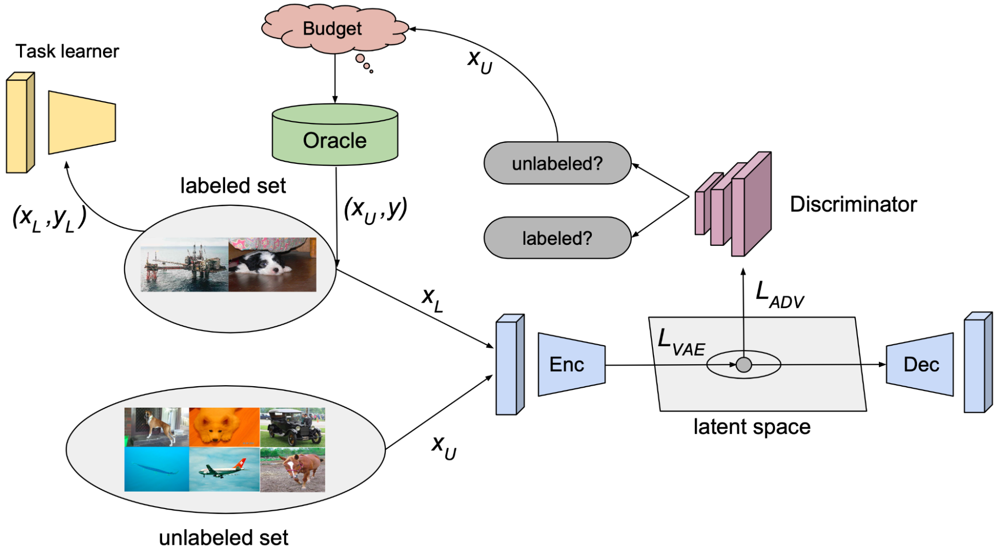
VAAL 中 VAE 表示学习的损失同时包含重构部分（最小化给定样本的 ELBO）和对抗部分（有标签和无标签数据来自同一概率分布 q_\phi）：
其中 p(\mathbf{\tilde{z}}) 是预定义的单位高斯先验，\beta 是拉格朗日乘子。
判别器的损失为：
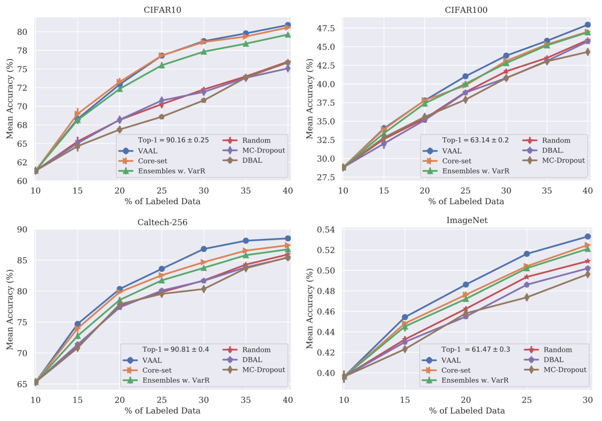
消融实验表明，联合训练 VAE 和判别器至关重要。他们的结果对有偏差的初始标注池、不同的标注预算以及有噪声的标注者都具有鲁棒性。
MAL（Minimax Active Learning；Ebrahimi 等, 2021）是 VAAL 的扩展。MAL 框架包含一个最小化熵的特征编码网络 F，后面跟着一个最大化熵的分类器 C。这种极小极大设置缩小了有标签和无标签数据之间的分布差距。
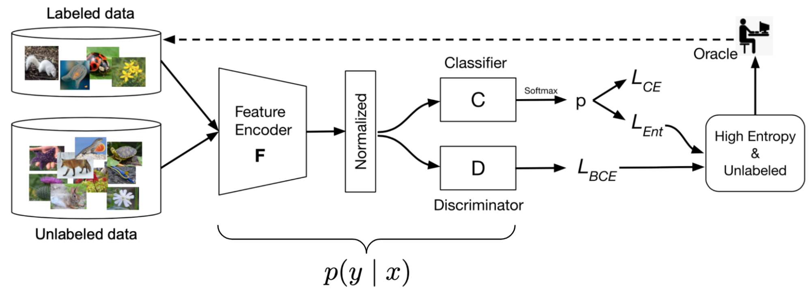
特征编码器 F 将样本编码为一个 \ell_2-归一化的 d 维潜在向量。假设共有 K 个类别，分类器 C 的参数为 \mathbf{W} \in \mathbb{R}^{d \times K}。
（1）首先在有标签样本上用简单的交叉熵损失训练 F 和 C，以获得良好的分类性能，
（2）在无标签样本上训练时，MAL 依赖一个极小极大博弈设置
其中，
判别器的训练方式与 VAAL 相同。
MAL 中的采样策略同时考虑多样性和不确定性：
实验将 MAL 与随机、熵、核集、BALD 和 VAAL 等基准在图像分类和分割任务上进行了比较，结果非常出色。
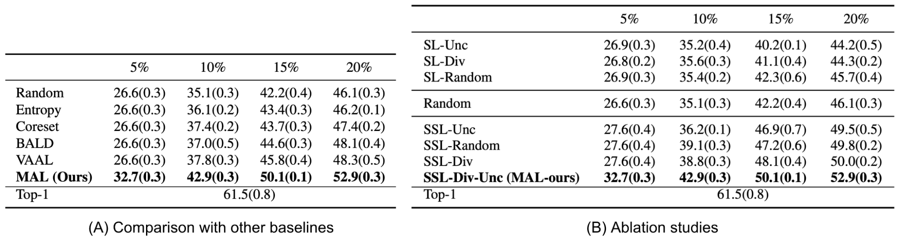
CAL（Contrastive Active Learning；Margatina 等, 2021）旨在选择 对比表示学习 示例。如果两个具有不同标签的数据点在网络中具有相似的表示 \Phi(.)，则它们在 CAL 中被视为对比示例。给定一对对比示例 (\mathbf{x}_i, \mathbf{x}_j)，它们应该满足
给定一个无标签样本 \mathbf{x}，CAL 执行以下流程：
在多种分类任务上，CAL 的实验结果与基于熵的基准接近。
衡量代表性#
核集方法#
核集（core-set）是计算几何中的一个概念，指的是能够近似更大点集形状的一小部分点。近似程度可以用某种几何度量来衡量。在主动学习中，我们期望在核集上训练的模型能够与在全部数据点上训练的模型表现相当。
Sener & Savarese (2018) 将主动学习视为核集选择问题。假设训练过程中总共可以访问 N 个样本。在主动学习中，每个时间步 t 会标注一小部分数据点，记为 \mathcal{S}^{(t)}。学习目标的上界可以写成如下形式，其中核集损失定义为有标签样本上的平均经验损失与整个数据集（包括无标签样本）损失之间的差异。
于是主动学习问题可以重新定义为：
这等价于 <span class="math-inline" data-math="k">k</span>-中心问题：选择 b 个中心点，使得任意数据点与其最近中心之间的最大距离最小。该问题是 NP-hard 的，近似解依赖于贪心算法。
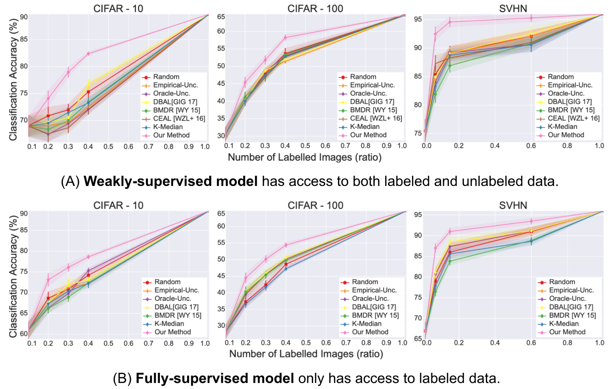
该方法在类别数量较少的图像分类任务上表现良好。当类别数量变多或数据维度增加（“维度灾难”）时，核集方法的有效性会下降（Sinha 等, 2019）。
由于核集选择计算代价较高，Coleman 等 (2020) 尝试使用一个更弱的模型（例如更小、更弱的架构，未完全训练）作为代理，发现经验上使用弱模型代理能显著缩短每次“训练模型—选择样本”的循环，同时不会明显损害最终误差。他们的方法被称为 SVP（Selection via Proxy）。
多样性梯度嵌入#
BADGE（Batch Active learning by Diverse Gradient Embeddings；Ash 等, 2020）在梯度空间中同时跟踪模型不确定性和数据多样性。不确定性通过网络最后一层的梯度模长来衡量，多样性则通过梯度空间中分布广泛的多样样本集合来捕捉。
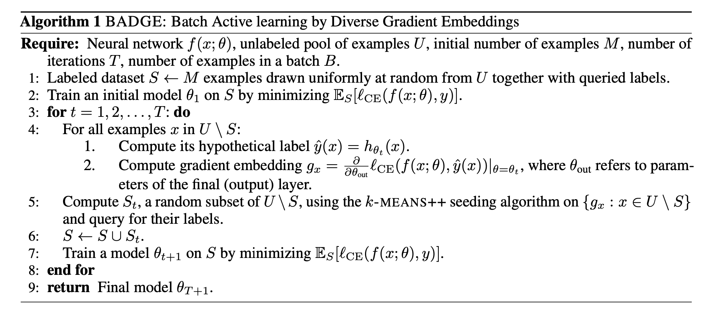
衡量训练效果#
量化模型变化#
Settles 等 (2008) 提出了一种名为 EGL（Expected Gradient Length）的主动学习查询策略。其动机是找到那些如果知道标签就能引起模型最大更新的样本。
令 \nabla \mathcal{L}(\theta) 为损失函数关于模型参数的梯度。具体地，对于一个无标签样本 \mathbf{x}_i，我们需要假设其标签为 y \in \mathcal{Y} 来计算梯度 \nabla \mathcal{L}^{(y)}(\theta)。由于真实标签 y_i 未知，EGL 依赖当前模型的信念来计算期望的梯度变化：
BALD（Bayesian Active Learning by Disagreement；Houlsby 等, 2011）旨在找到能最大化关于模型权重信息增益的样本，这等价于最大化期望后验熵的减少量。
其背后的解释是“寻找 \mathbf{x}，对于这些样本，模型对其标签 y 整体上最不确定（高 H(y \vert \mathbf{x}, \mathcal{D})），但对于模型参数的各个具体取值却很置信（低 H(y \vert \mathbf{x}, \boldsymbol{\theta})）。”换句话说，每个单独的后验抽样都很自信，但多个抽样集合却持有不同的意见。
BALD 最初是为单个样本提出的，Kirsch 等 (2019) 将其扩展到了批量模式。
遗忘事件#
为了研究神经网络是否倾向于遗忘之前学到的信息，Mariya Toneva 等 (2019) 设计了一个实验：他们在训练过程中跟踪模型对每个样本的预测，并统计每个样本从分类正确变为错误或从错误变为正确的转变次数。然后可以据此对样本进行分类：
他们发现存在大量一旦学会就永远不会被遗忘的不可遗忘样本。而带有噪声标签或具有“非典型”特征（视觉上难以分类）的图像则是最容易被遗忘的样本。实验从经验上验证了：移除不可遗忘样本不会损害模型性能。
在实现中，只有当样本出现在当前训练 batch 中时才会统计遗忘事件；也就是说，他们是在后续 mini-batch 中同一样本的多次呈现之间计算遗忘。每个样本的遗忘事件数量在不同随机种子下相当稳定，而且可遗忘样本倾向于在训练后期才被首次学会。遗忘事件也被发现可以在整个训练过程以及不同网络架构之间迁移。
如果我们假设模型在训练中改变预测是模型不确定性的一个信号，那么遗忘事件可以作为主动学习采集的依据。然而，对于无标签样本我们没有真实标签。Bengar 等 (2021) 为此提出了一种称为标签分散度（label dispersion）的新指标。让我们看整个训练过程中，对于输入 \mathbf{x}，c^* 是最常被预测的标签，而标签分散度衡量的是模型没有把 c^** 分配给该样本的训练步数占比：
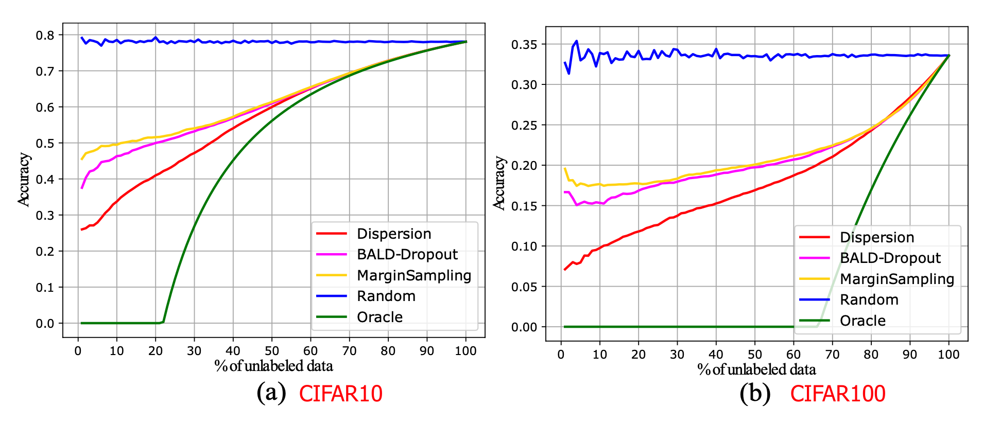
在他们的实现中，分散度在每个 epoch 结束时计算。如果模型始终给同一个样本分配相同标签，则标签分散度低；如果预测经常变化，则分散度高。标签分散度与网络的不确定性相关，如下图所示。 标签分散度与网络不确定性相关。x 轴上数据点按标签分散度分数排序，y 轴是模型尝试推断这些样本标签时的预测准确率。（图片来源：Bengar 等, 2021）
混合方法#
在批量模式下运行主动学习时，控制 batch 内部的多样性非常重要。Suggestive Annotation（SA；Yang 等, 2017）是一种两步混合策略，目标是同时选择高不确定性和高代表性的样本。它使用在有标签数据上训练的集成模型得到的不确定性，以及核集来选择代表性样本。
用 k 个数据点构造 \mathcal{S}_a \subseteq \mathcal{S}_c 以最大化 F(\mathcal{S}_a, \mathcal{S}_u) 是最大集合覆盖问题的推广形式。该问题是 NP-hard 的，其最佳多项式时间近似算法是一个简单的贪心方法。
Zhdanov (2019) 运行了与 SA 类似的过程，但在第二步中使用 k-means 而非核集，其中候选池的大小相对于 batch 大小按比例设置。给定 batch 大小 b 和一个常数 beta（取值在 10 到 50 之间），其流程如下：
主动学习还可以进一步与 数据不足时的学习（一）：半监督学习 结合以节省预算。CEAL（Cost-Effective Active Learning；Yang 等, 2017）并行执行两件事：
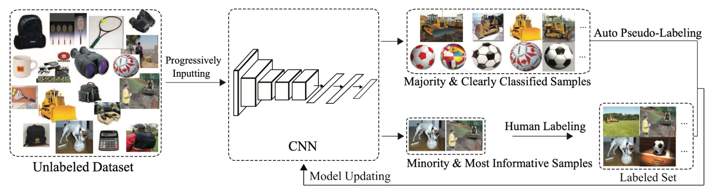
引用#
引用格式：
Weng, Lilian. (Feb 2022). Learning with not enough data part 2: active learning. Lil’Log. https://lilianweng.github.io/posts/2022-02-20-active-learning/.
@article{weng2022active,
title = "Learning with not Enough Data Part 2: Active Learning",
author = "Weng, Lilian",
journal = "lilianweng.github.io",
year = "2022",
month = "Feb",
url = "https://lilianweng.github.io/posts/2022-02-20-active-learning/"
}
参考文献#
[1] Burr Settles. Active learning literature survey. University of Wisconsin, Madison, 52(55-66):11, 2010.
[2] https://jacobgil.github.io/deeplearning/activelearning
[3] Yang et al. “Cost-effective active learning for deep image classification” TCSVT 2016.
[4] Yarin Gal et al. “Dropout as a Bayesian Approximation: representing model uncertainty in deep learning.” ICML 2016.
[5] Blundell et al. “Weight uncertainty in neural networks (Bayes-by-Backprop)” ICML 2015.
[6] Settles et al. “Multiple-Instance Active Learning.” NIPS 2007.
[7] Houlsby et al. Bayesian Active Learning for Classification and Preference Learning." arXiv preprint arXiv:1112.5745 (2020).
[8] Kirsch et al. “BatchBALD: Efficient and Diverse Batch Acquisition for Deep Bayesian Active Learning.” NeurIPS 2019.
[9] Beluch et al. “The power of ensembles for active learning in image classification.” CVPR 2018.
[10] Sener & Savarese. “Active learning for convolutional neural networks: A core-set approach.” ICLR 2018.
[11] Donggeun Yoo & In So Kweon. “Learning Loss for Active Learning.” CVPR 2019.
[12] Margatina et al. “Active Learning by Acquiring Contrastive Examples.” EMNLP 2021.
[13] Sinha et al. “Variational Adversarial Active Learning” ICCV 2019
[14] Ebrahimiet al. “Minmax Active Learning” arXiv preprint arXiv:2012.10467 (2021).
[15] Mariya Toneva et al. “An empirical study of example forgetting during deep neural network learning.” ICLR 2019.
[16] Javad Zolfaghari Bengar et al. “When Deep Learners Change Their Mind: Learning Dynamics for Active Learning.” CAIP 2021.
[17] Yang et al. “Suggestive annotation: A deep active learning framework for biomedical image segmentation.” MICCAI 2017.
[18] Fedor Zhdanov. “Diverse mini-batch Active Learning” arXiv preprint arXiv:1901.05954 (2019).